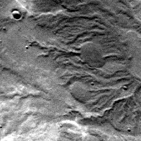
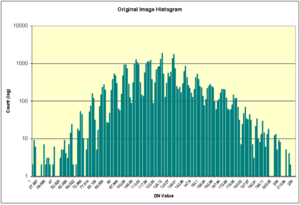
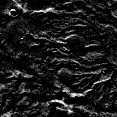
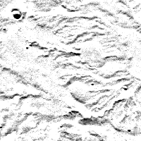
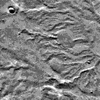
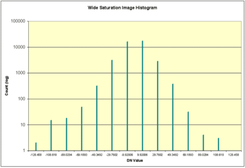

Core Base and Multiplier ¶
Core Base and Multiplier Basics ¶
Recall that a Digital Number (DN) is the content of a pixel. These numbers are used to represent real world values such as:
- Radiance - A measurement describing the amount of electromagnetic energy emitted from an area of a planet.
- Reflectance - The ratio of reflected energy to incoming energy
- Elevation - The height above or below a fixed point on the surface of a body
- Emissivity - A measure describing a substances ability to absorb and radiate electromagnetic energy.
Let's assume we have an 8-bit cube with values representing the elevation in meters. Unfortunately 8-bit pixels have a range of 0 to 255, which is very restrictive for elevation. ISIS deals with this problem by using a Core Base and Multiplier. Each DN is really treated as a floating point number in all ISIS programs.
In the example below, use mouse to examine the values in an 8-bit elevation cube, then change the multiplier and base notice how the values change.
Click the questions to see the answers.
Change the multiplier to 100 . Re-examine the image. Do the elevations range from 0 to 25500 meters?
Change the base to -500 . What is the range of pixel values?
Important Notes: ¶
- The equation applied to 8-bit and 16-bit cubes is DN = Base + (stored value * Multiplier).
- Base and Multiplier are not used for 32-bit cubes.
- It is much easier to think of all ISIS cubes as 32-bit even though they may be stored as 8-bit or 16-bit.
Core Base and Multiplier and ISIS3 ¶
Within ISIS3, every software application dealing with an image cube uses the bit-type of the data and the Base and Multiplier in order to generate a Digital Number (DN) that represents the data. For example, if a cube holds elevation data, the DN of each pixel is the elevation in measurable units (e.g. meters, feet, etc.) of that point on the surface. All ISIS3 applications use the floating point values (i.e., with the base and multiplier applied to the stored pixel value) in their calculations.
The values stored in the Base and Multiplier keywords in the cube label (located in the Pixels Group) are applied to the stored values in 8-bit and 16-bit cubes of the image cube in order to generate DN values using the following equation:
DN value = Base + (Multiplier * stored value)
For example, radiance values in a radiometrically calibrated cube are displayed as floating point values (regardless of the stored value) representing radiance from the surface in radiance units (e.g. µw/(cm2sr)). If the output calibrated image file is an 8-bit cube (i.e. values ranging from 0 to 255), the Base and Multiplier are applied to shift and scale the stored values in order to represent the actual floating point radiance values.
The resulting DNs will vary slightly between 8-bit and 16-bit cubes due to the different number and range of values that can be stored within each bit-type.
For 32-bit cubes, the Base and Multiplier keywords are not used because each pixel DN already directly represents actual floating point value. Processing image data within ISIS3 in 32-bit avoids processing-induced saturation of pixel DN's and bin compression problems.
Processing Considerations ¶
Choose the Output Range Carefully
When processing image data with 8-bit or 16-bit output, you must anticipate the output DN range of the cube you will be creating. This is particularly important if the input DN range will be changed significantly after processing through an ISIS3 application, such as a radiometric calibration application or ratio.
The ISIS3 software automatically computes the Base and Multiplier values based on the provided range of valid output DNs you set for 8- or 16-bit output image cubes. Take care in setting the output range, otherwise valid data may be lost:
- Minimum too high : Output DNs falling below the MIN value will be set to low saturation
- Maximum too low : Output DNs falling above the MAX value will be set to high saturation
- Range too wide : Output DNs will be binned (a subrange of DNs are all combine into one DN), reducing the number of discrete DNs in the output
The following examples are gross exaggerations, and are meant only to illustrate some problems you may see creating 8-bit and 16-bit output cubes.
Original Image ¶

Original Image
{kind=link}

Histogram of original image.
Notice the pixel values are well distributed over the range.
{kind=link}
Statistics
The following statistics were generated by the stats application.
Group = Results From = original.cub Average = 125.24218105453 StandardDeviation = 22.665000770265 Variance = 513.70225991612 Median = 124.90322580645 Mode = 126.88172043011 Skew = 0.044865021383909 Minimum = 1.0 Maximum = 254.0 TotalPixels = 40000 ValidPixels = 39999 NullPixels = 0 LisPixels = 0 LrsPixels = 0 HisPixels = 0 HrsPixels = 1 End_Group
Low Saturation Image ¶
In this example the range is set to 1:254. By default, the pixels the highpass application generates have values that are centered around 0. Since there will be values less than 1 in the file, setting the minimum of the output range to 1 will cause all of the pixels with values less than 1 to be set to NULL . In this example, over half our pixels have been set to NULL, needlessly throwing out what should be valid data.

Low Saturation
{kind=link}
Command Line
highpass from=original.cub to=lowsaturation+8bit+1:254 lines=31 samples=31
Statistics
Group = Results From = lowsaturation.cub Average = 11.533880695352 StandardDeviation = 9.9256794761932 Variance = 98.519113064124 Median = 8.9423264907136 Mode = 1.9775171065494 Skew = 0.78328769658181 Minimum = 1.0 Maximum = 126.0 TotalPixels = 40000 ValidPixels = 19731 NullPixels = 20268 LisPixels = 0 LrsPixels = 0 HisPixels = 0 HrsPixels = 1 End_Group
High Saturation Image ¶
In this example the range is set to -123:1. Like above, by default, the pixels the highpass application generates have values that are centered around 0. Since there will be values greater than 1 in the file, setting the maximum of the output range to 1 will cause all of the pixels with values greater than 1 to be set to High Representation Saturation (HRS) . In this example, nearly half our pixels have been set to HRS, needlessly throwing out what should be valid data.

High Saturation
{kind=link}
Command Line
highpass from=original.cub **to=highsaturation+8bit+-123:1** lines=31 samples=31
Statistics
Group = Results From = highsaturation.cub Average = -10.640719301463 StandardDeviation = 10.791846466594 Variance = 116.46395015854 Median = -7.8135106000765 Mode = -1.4146604383805 Skew = -0.78592909289581 Minimum = -122.50988142293 Maximum = 0.9999999999954 TotalPixels = 40000 ValidPixels = 21278 NullPixels = 1 LisPixels = 0 LrsPixels = 0 HisPixels = 0 HrsPixels = 18721 End_Group
Wide Saturation Image ¶
In this example the range is set to -2500:2500. Unlike the above examples, this range encompasses the entire range of the output data, however, the range is much wider than necessary. In order to squeeze all the 5,001 possible values into the 256 possible values that can be stored in our 8-bit output file, ranges of values are combined into a single value that represents that range. Instead of getting a nice distribution of values across the range (like in our original image), now there's only a handful of values representing our data set - this effect is called binning . The effects of binning are most obvious in the image histogram - compare the histogram graph on the left to the histogram graph of the original image above.

Wide Saturation
{kind=link}
Command Line
highpass from=original.cub **to=widesaturation+8bit+-2500:2500** lines=31 samples=31
Histogram Statistics
The following statistics were generated by the hist application, which also generates the comma-delimited data used to generate the histogram shown left.

Histogram of wide saturation image.
Notice that all pixels are in one of a few bins, not well distributed over the range as they should be.
{kind=link}
Cube: widesaturation.cub Band: 1 Average: -0.00419971 Std Deviation: 16.5516 Variance: 273.957 Median: 9.92006 Mode: 9.92006 Skew: -1.79878 Minimum: -128.458 Maximum: 128.458 Total Pixels: 40000 Valid Pixels: 39999 Null Pixels: 0 Lis Pixels: 0 Lrs Pixels: 0 His Pixels: 0 Hrs Pixels: 1
Tips ¶
- ISIS3 does not require the base and multiplier to be the same in all input cubes (unlike older versions of ISIS)
- If you're uncertain what the DN range of your output cube will be when you run an application, run the application so it generates a standard 32-bit cube and run stats on the new cube.
- In general, we recommend always working with 32-bit cubes. If you don't reduce the bit-type to 8-bit or 16-bit, you don't need to worry about saturation, binning, or loss of accuracy while working.
Related ISIS3 Applications ¶
See the following ISIS3 documentation for information about the applications discussed here:
- stats - Get statistics about a cube
- hist - Get histogram data and statistics about a cube
- highpass - high pass filter
The Effect on Image Data ¶
If the Base is 0 and Multiplier is 1, the DN values will be the same as the stored values. In this case, values will range from 0 to 255 for an 8-bit cube, and -32768 to 32767 for a 16-bit cube. If these two keywords are not 0 and 1, then the DN range will vary based on whatever you specified for the range when you ran the application. The number of unique values will still be 256 for an 8-bit cube, 65,536 for a 16-bit cube, and ~4 billion for a 32-bit cube.
cubeatt from=file_32bit to=file_8bit+8bit:1:254 cubeatt from=file_32bit to=file_8bit+8bit+0:1.0
Core Base and Multiplier Summary ¶
The base and multiplier are used to convert 8-bit and 16-bit cube pixel values stored on disk to a digital number (DN). Once converted the DN may represent measurements like radiance or reflectance. 32-bit pixels are not converted using the base and multiplier. They already represent the true measurement.
DN = Base + (stored value * Multiplier)
Be very careful when specifying the bit type for an output cube. Specifying a smaller bit type can cause a loss of data. Specifying a larger bit type will not cause you to lose any data, but will increase the size of the output cube.